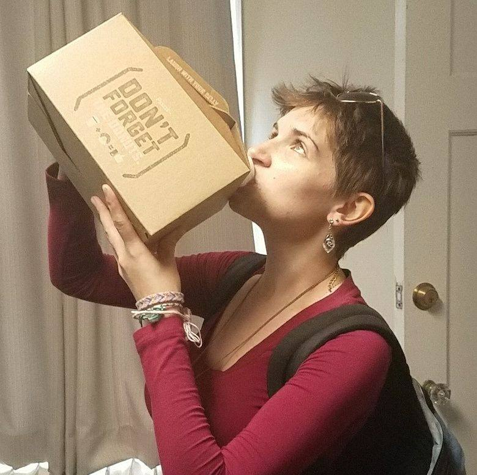
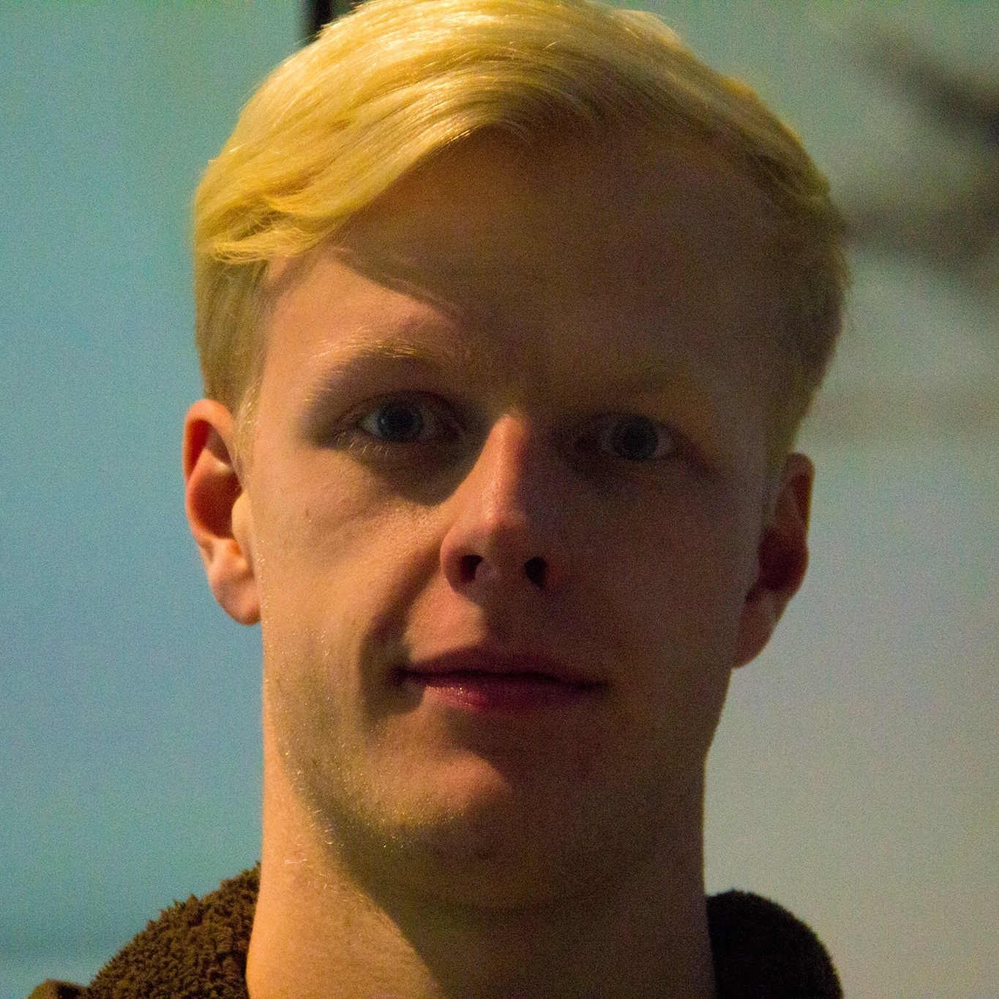
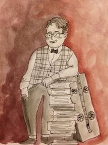
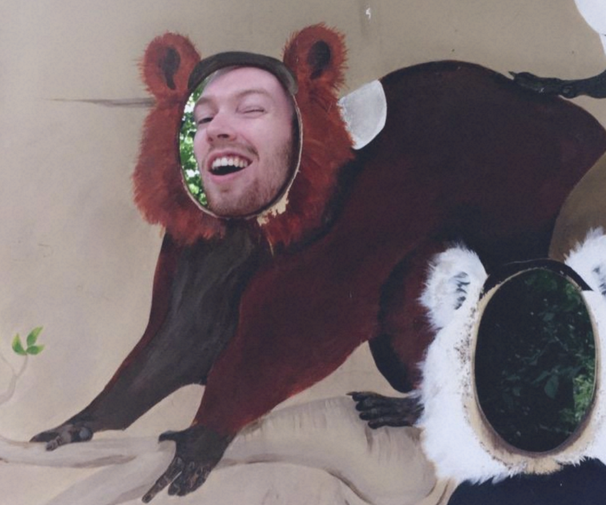

Estelle BayerEstelle is a computer science major at Carleton College who firmly believes that metaphor is the closest that humans come to perfectly efficient communication. Estelle, like many of her teammates, never set out to become a CS major, but was taken in by Intro. She loves puzzles of all varieties, and particularly loves finding ways to get computers to solve them for her. Some of her more hare-brained ways of incorporating CS into her everyday problem-solving include writing a Python program to automatically sort her nail polish colors, finding spanning sets of words in temporary tattoo letters, and pseudo-randomly determining which episode of SMASH she should rewatch. She'd like to thank her lovely team, her lovely friends, and her lovely parents for going on this amazing journey with her. |
 |

|
Martha DurrettMartha is a computer science/English double major at Carleton College, and, like many of her teammates, has found happiness in the digital humanities, a field that bridges the gap between her two majors. She works as a Digital Humanities Associate at Carleton, teaming up with fun and interdisciplinary groups of professors and students to work on a diverse range of innovative projects, and she hopes to pursue work in this field after graduation. When Martha isn't writing code or writing papers, she enjoys working in the dining hall as a dining hall manager, playing violin in the orchestra, and DJing for KRLX, Carleton's 24/7 radio station, where she was the general manager until Spring 2018. Martha would like to thank Eric Alexander, her marvelous group members, and King Radbod for working together wonderfully to get through this crazy thing called comps. |
Brendan FriesenBrendan is a Computer Science/Cinema and Media Studies double major at Carleton College. He has a strange obsession with twisting computer science to nonsensical ends. He has written an implementation of his own text generation algorithm which mimics the text fed into it. When not writing bizarre code that no one is every going to find a use for, Brendan loves producing short fiction films. If you have a moment, make sure to check out his Cinema and Media Studies Comps. He also enjoys photography and digital photo manipulation. He collects music and also composes his own. Definitely check out his soundcloud. He works in Carleton's CAMS production office where he manages equipment checkout and occasionally gets to troubleshoot Adobe Premiere issues or solve obscure QLab networking problems. He dreams of studying film in graduate school and becoming a professor in film production at the college level. |
 |

|
Adam KleinWhat can be said about this mysterious man? He has not given his bio ghost-writer permission to share personal details. Is he secretly a Wizard of the Coast? Perhaps a closet mindflayer? The world will never know. |
Bard SwallowBard came to Carleton imagining xe would end up an English or History major studying Medieval Europe, but after taking intro CS, Bard was hooked. Since then, xe has worked on the intersection of xyr interests: the Digital Humanities. Now that Bard has learned lots of Python shortcuts and overdosed on JavaScript, xe is looking forward to learning even more languages as xe begins an MA in Medieval Literatures and Languages at the University of York in the Fall. In xyr spare time, Bard enjoys playing any instrument xe can get xyr hands on, speaking in iambic pentameter, torturing xyr teammates with puns, playing mischievous characters in tabletop rpgs, reading Science Fiction and Fantasy novels, and singing Child Ballads. Bard would like to thank xyr family, friends, the entirety of Benton (sci-fi and fantasy interest) House, xyr boyfriend Galen, and xyr collection of Latin dictionaries that helped name the project—runner-up names include lacticinium ("food prepared with milk"), latrunculus ("little bandit"), ludibrium ("mockery"), or lipsanotheca ("a storehouse for relics"). |
 |
|  |
Sam WisemanA Connecticut native, Sam fully expected his world to turn upside down when he flew out to Minnesota for college. However, he never could have guessed that he'd become another one of intro CS's hapless victims and major in the subject! He loves studying it because it lets him look at other topics in a whole new light; as such, a comps project within the digital humanities was great fun for him. When he's not chunking documents or fine-tuning his word clouds, Sam enjoys life as a music double major and French minor. He plays the piano and violin and hopes to continue doing so after moving to Wisconsin to start work as a software developer. He'd like to thank his supportive family, wonderful friends, and amazing comps group for a fun and fulfilling senior year. |